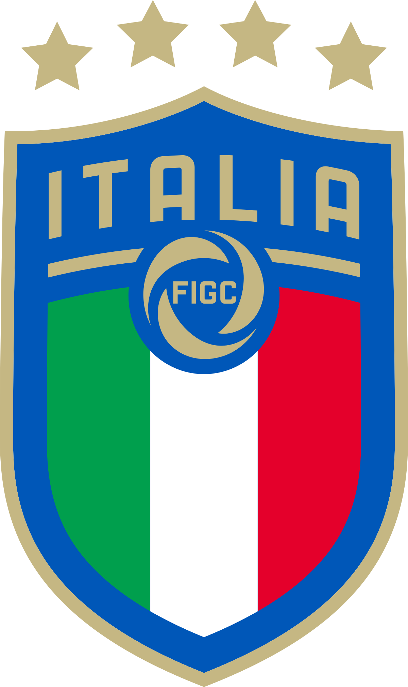

Home
Rosa
Torneo
Highlights dei Gironi
Turchia-Italia 0-3
Italia-Svizzera 3-0
Italia-Galles 1-0
Highlights degli Ottavi di finale
Italia-Austria 2-1
Highlights dei Quarti di finale
Belgio-Italia 1-2
Highlights della Semifinale
Italia-Spagna 1-1 (4-2 d.c.r)
la Finale
Italia-Inghilterra 1-1 (3-2 d.c.r)